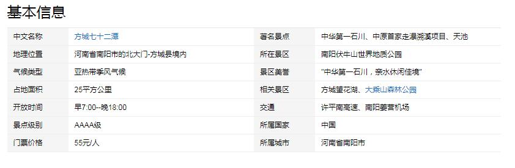

- 七十二潭景区
南阳市方城县七十二潭景区位于河南西南部、南阳盆地东北的方城县，紧邻省道239线，距离方城高速出口18公里，交通极为便利，是伏牛山世界地质公园、伏牛山自然保护区的重要组成部分，也是南阳伏牛山世界地质公园入口处第一个具有独特地貌特征的景区，有"中华第一石川"之美誉。2010年被评为河南省十大新秀魅力景区，2012年评升为国家3A旅游景区，2014年晋升为国家AAAA级旅游景区。景区仍在不断开发建设中。
景区总面积25平方公里，四季风景如画，山青水碧，谷幽林密，石怪潭奇，飞瀑流泉，是中国唯一的石川地质奇观。石川地质景观形成于距今1.5亿年前，自上而下梯级延展长达4公里，犹如一条银河，随着山势起伏，如飞龙、似卧虎，铺盖在山谷之中，自上而下飞瀑般延展，结构独特，规模宏大，鬼斧神工，被地质专家称为罕见的"石川穴"，创立"石川"新名并录入了国家地质大词典。
石川景区四季各有看点:春有花，金黄的连翘，元胡花漫山遍野;夏有绿，枫杨、刺秋等原生丛林郁郁葱葱;秋有果，山核桃、板栗、山楂等硕果累累;冬有冰，冰瀑相连，堪称奇观。春看花，夏戏水，秋采果，冬赏川，美不胜收，因此有"植物的世界，冰川的海洋"之美称。山青水碧，谷幽林密，石怪谭奇，泉涌瀑飞，被誉为"中华第一石川，亲水休闲佳境"。

主要景点:
景区处于南阳伏牛山生态旅游区东北入口处，面积25平方公里，最高峰海拔762.3米，山青水碧，谷幽林密，石怪潭奇，泉涌瀑飞，有元代兵营遗址、金花姑娘传说轶事，南阳人帝王刘秀驻足留恋，诗仙李白至此赋诗。别开生面的石川天然健康足道、依山傍水的天池商务休闲度假、惊险刺激的军事拓展训练、挑战极限的森林探险、眺游婀娜多姿的美女峰等旅游项目，吸引远近游人前来观光游览。 石川地质景观形成于1.5亿年前，山下梯级长达4公里，规模宏大，鬼斧神工，结构独特，钟灵毓秀。石川内四季泉流不息，近百个石穴潭池形态各异。川内怪石嶙峋，千姿百态，穿越亿万年时空的原生态，春看花，夏戏水，秋采果，冬赏川，美不胜收，让您真正领略返璞归真的野趣之美! 2012年4月11日，方城七十二潭景区举行国家3A级旅游景区揭牌仪式，南阳市人大常委会副主任梁天平、市政协副主席贺国勤等出席仪式并为景区揭牌。该景区是方城县创建的第一个国家3A级景区，它标志着方城县旅游事业发展迈上了一个新台阶。这对于推进该县旅游业的快速发展具有十分重要的示范意义。七十二潭景区长期坚持环保生态的发展理念，努力打造中华第一石川，景区设施得到了较大改善，知名度日益提高。该景区2010年被评为河南省旅游十大新秀和河南省魅力景区。2014年晋升为国家AAAA级旅游景区，2014年七十二潭景区依托石川特色和景区独有的潭瀑资源，推出了中原地区唯一的走瀑溯溪项目。脚穿一双草鞋，沿着溪谷逆流而上，徒手攀爬于跌宕潭瀑之间，在峡谷间寻找戏水的快乐，水花四溅，风吹林动，鸟语花香，让人恍惚间有种穿越千年的时光回归原始的错觉。穿越亿年时空的七十二潭地质公园将给您带来不同寻常的亲水体验!"中华第一石川，亲水休闲仙境"，七十二潭是山水观光、休闲度假的理想乐园!折叠编辑本段交通信息。
交通信息：
自驾：郑州方向、安阳、鹤壁、濮阳、许昌到七十二潭景区的行车线路:京珠高速→南兰高速(许平南高速)→方城→鲁姚省道→七十二潭。 洛阳、焦作、新乡、济源到七十二潭的行车线路:(长济高速)二广高速→转沪陕高速→南兰高速→方城→鲁姚省道→七十二潭。 周口、漯河到七十二潭景区的行车路线:南洛高速→南兰高速(许平南高速)→方城鲁姚省道→七十二潭。 驻马店到七十二潭景区的行车路线:京珠高速→南洛高速→南兰高速(许平南高速)→方城→鲁姚省道→七十二潭。 商丘到七十二潭景区的行车路线:商周高速→宁洛高速→南兰高速)→方城→鲁姚省道→七十二潭。
景区美食：
胡辣汤：胡辣汤，又名糊辣汤，是中国北方早餐中常见的汤类食品。常见于街上的早点摊点，其特点是微辣，营养丰富，味道上口，十分适合配合其它早点进餐。
烩面：烩面是河南特色美食，有着悠久的历史。它是一种荤、素、汤、菜、饭聚而有之的传统风味小吃，以味道鲜美，经济实惠，享誉中原，遍及全国。烩面按配料不同可分为:羊肉烩面，牛肉烩面，三鲜烩面，五鲜烩面等等。